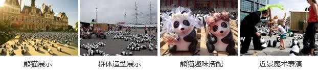

关键法则
亲子旅游的特点
由于参与主体的特殊性和旅游目的独特性，亲子旅游呈现以下特点：
安全性
由于亲子游参与主体的特殊性，即孩子的自我保护能力和适应能力相对较弱，因而保证游玩的安全零伤害(身心伤害)是亲子游的最基本要求。
寓教于乐
这是亲子游的核心吸引所在。针对不同年龄阶段孩子的特点，设计符合他们心智发育需求的益智性、趣味性产品，在快乐中学习，是亲子游的标准配置。
情感互动
这是亲子游的特色亮点，也是亲子游目的的独特所在。家长不再只是安全员、观察员、保姆，而是更多参与亲子活动项目，共享“小手牵大手”的亲昵时光。
体验性
这不仅是旅游市场的大势所趋，更是为了迎合孩子的需求以及满足家长互动的要求，通过体验使大人小孩都能收获满满的成长记忆和快乐画面。
亲子旅游开发关键法则
亲子旅游的两大独特性决定了其产品设计要大小兼顾，在孩子快乐成长的同时，大人也能收获丰富多彩的旅行体验。
亲子游安全法规
安全第一
国内亲子游安全法规涉及面少，主要在儿童游乐设施和儿童交通安全方面。
| 类型 | 名称 | 颁定单位 | 管理对象 | 亲子游安全相关内容 |
|---|---|---|---|---|
| 游乐设施 安全法规 |
《游乐设施安全规范》 | 国家质量监督 检验检疫总局 |
高空、高速、可能危及人身安全的游乐设施 | 针对成人与儿童进行有区别设计、使用 |
| 交通 安全法规 |
《机动车儿童乘员用约束系统》 | 国家质检局 国家认监委 |
机动车儿童乘车安全 | 所有儿童乘员搭乘三个车轮或三个车轮以上机动车必须按照标准要求使用约束系统； 针对不同年龄段、不同体重范围的儿童乘员做出了不同的标准规定； 所有的儿童约束系统都必须配备有一份中文说明书。 |
儿童游乐设施安全法规
安全第一
儿童游乐设施，是按照身高而非年龄进行限制，是根据安全带、安全杆的尺寸而严格规定的。
我国已出台一系列法规，对儿童游乐设备进行安全监察，并提出检验机构的要求。
- 《儿童游乐设备监督检验规程（试行）》（国质检锅【2002】124号）
- 《机电类儿童游乐设备制造许可规则（试行）》（国质检锅【2003】174号）
- 《机 电类儿童游乐设备安装改造维修许可规则（试行）》（国质检锅【2003】251号）
- 《儿童游乐设备作业人员监督管理办法》（国家质量监督检验检疫总局第70号令）
- 《大型儿童游乐设备设计文件鉴定规则（试行）》（国质检锅【2003】321号）
- 《大型儿童游乐设备安全管理人员和作业人员考核大纲》
- ……
儿童游乐设备必须设置醒目的安全标志
最新的游乐设施安全标准是2008年8月1日起实施的《游乐设施安全规范》。
明确要求：游乐设施（尤其是儿童游乐设备）应在必要的地方和部位设置醒目的安全标志。安全标志分为禁止标志（红色）、警告标志（黄色）、指令标志（蓝色）、提示标志（绿色）等四种类型。
儿童游乐区的安全设计要点：场地与边界
安全第一
作为旅游规划设计机构，更应关注游乐区域或游乐产品的设计安全，从布局到设计为亲子活动提供更多安全保障。
各就各位
根据功能与用途的标准来建立空间关系。如区分团体活动区域与个体活动区域、嘈杂的体力活动区域和安静的活动区域。
设置边界
边界设置与否取决于儿童年龄段以及活动的特征。可利用周围的道路或自然资源如灌木丛将其隔开，或利用墙和栅栏。
注：儿童游乐区及产品设计内容摘录于《儿童游乐场设计》一书，（西）布罗托、陈玥、刘超，天津大学出版社。
儿童游乐区的安全设计要点：合适的空间
安全第一
在设计的时候，保证合适的空间很重要，是建立安全区域的基本条件。
“影响面积”
涉及较大幅度移动的游乐设施周围要建立安全区域。欧洲标准设计的无障碍区域，即游乐设施最高最长部位周围1.5米范围内，被称作“影响区域”。这是儿童摔倒时可能到达的位置，在这个影响范围之内，不应该有任何障碍物。
“无障碍摔倒高度”
这一概念是选择垫材的决定因素。如果设施是用于站立的，无障碍空间应该从脚支撑处延伸至更矮的部位。如果设施是用于坐着的，这个空间就应该是座位和更低的表面之间。如果设施是用于悬挂，这个空间就应该是从手的支持物到更低的表面。
儿童游乐区的安全设计要点：通道和路线
安全第一
通道
在游乐场中应设计不同类型的小道，这些小道应该和主要通道相连，以便儿童可以轻松找到。小道可以重叠、裂开，不但丰富公园的设计，还能提供多种路线。但在任何情况下，都应该避免设计狭窄的小道和死胡同，以免儿童在这些地方碰撞。还可以为自行车和三轮车设计专门通道，和其他通道分开，这样也可以避免碰撞的发生。哪里有障碍哪里就有扶手。
小道侧面保护
在陡峭的斜坡处很容易发生摔倒等意外事故，应设计扶手或绳索。例如，人行道应该设有缓冲点和缓冲区域。
儿童游乐区的安全设计要点：缓冲与垫料
安全第一
大部分的摔倒都是因为失去平衡导致的，在玩耍中很难避免。可以通过铺设缓冲的装置来抑制摔倒。
最常用的缓冲材料是树皮皱、木片、沙子和碎石。
草，也是有效的防摔倒垫材，它的效果取决于天气情况以及地理位置。另外也取决于生长周期，耐磨性、撕裂度以及持续性。
合成材料，如橡胶或回收的泡沫，是光滑表面的基础，它们可以让行动不便的人很容易到达活动区域，也可以用于缓冲不同程度的冲击力。并且其多颜色的选择也丰富了设计。但材料不应带有有毒元素。
儿童游乐产品的创意设计要点：形状
益智而且有趣
基于在玩乐中学习的理念，致力于将教育乐趣融入娱乐场设施，我们通常将形状、感官（如声音、触摸、嗅觉等）以及儿童最喜爱的水、沙子等元素融入游乐产品策划与设计。
形状
想象力本身就是儿童最重要最有效的游乐设施。不明确的抽象的东西，如一堆石头或沙子对儿童的吸引力远远超过一些具体的特别的东西。这也就是为什么避免现实主义设计——将现实的东西复制过来，例如火车、汽车和房子。富有想象空间的设施在游乐场设计中显得更为有效。
自然不规则的场地
游乐场设计中，首要考虑因素就是场地的结构。充分利用一些自然的不规则的形状，便可以事半功倍地引起孩子们的兴趣。
儿童游乐产品的创意设计要点：声音与感官
益智而且有趣
儿童热衷于通过敲打或摩擦物体来制造声音。
这也是为什么越来越多游乐场里有了制造声音的设施。不管是充分利用天然元素，还是设计具体的系统，最终的目标都是让所有的人都喜欢，包括成年人。
如何制造声音？
制造声音是多么的自然，一阵微风吹过，草木和树的叶子都会发出声音。这些都足以让儿童开心。儿童特别喜欢能够互动实验的设施。如设计振动系统、哨子、木琴和其他可以发出声音的设施，或者凹面的、管状的、抛物线形状的物体等等，这些能够制造回声，放大声音，产生共鸣，这对儿童来说不仅具有娱乐功能，还具有指导意义。
儿童游乐产品的创意设计要点：游戏与玩耍
益智而且有趣
保持积极性的体力游戏
需要一个宽敞的空间，并配以合适的安全防护器材，防止摔倒或磕碰。不过，更为推荐的是，增加模块化玩耍设施，结构以及地形的多样化，最大可能增加游戏的互动性和动态性。
团体性游戏
追逐、躲迷藏和角色扮演都是团体性活动。想象力可以在这些活动中得到充分发挥。而简单的设施就能激发儿童的想象力。但是，更为有效的是，提供抽象的、有建设性的设施，也会增加儿童的主观能动性。
充满想象力和创造性的游戏
沙子、草、水、砂石、泥土这些材料可以充分开发儿童的想象力和创造性，因为他们可以随意改变这些材料的形状。一成不变的东西是无法引起儿童的注意力，并让他们保持安静的。
尝试性和感官性游戏
感官在人类活动中无处不在，儿童才是真正体现这些感官的先驱者。所以能够刺激和融入这些感官的设施对儿童非常有帮助，能充分调动他们的触觉、听觉、视觉、甚至是嗅觉。
盖房子、打水仗，玩沙子、泥巴、水、轮子……
儿童在任何时间、任何地点都很喜欢玩沙子和泥巴。他们可以去挖、去建造、雕刻、装潢和掏空，也可以把它们和水混合在一起玩。这种游乐区域，需要的是一个安静，有部分阳光射进来并能挡风的地方。
通常是最小的孩子喜欢和沙子、泥巴玩耍，但需要成年人在旁监督。因此，像长椅或其它可以坐的地方需要设计在区域旁边。但有沙子的地方并不适合轮椅。所以，可以加高沙盒的高度，让坐在轮椅上的儿童也可以很轻松碰到沙子。
也可以引进不同各类的沙子，为儿童提供不同的触觉体验。
活动互动：大小兼顾的欢乐时光
互动而不是观看
| 名称 | 简介 | 活动情感价值 | 案例盘点 |
|---|---|---|---|
| 户外亲子拓展 | 亲子共同参与诸如攀岩、徒步等具备一定挑战性项目 |
|
亲子户外运动社区 Oxylane Village |
| 亲子景观设计活动 | 亲子合作参与微型景观的手工拼装制作工作 |
|
微景观亲子设计活动 |
| 亲子趣味运动会 | 共同参与趣味性运动与游戏 |
|
全国亲子运动会 |
| 亲子户外音乐生活节 | 以音乐为主题，涵盖户外露营、动物体验等活动内容的亲子互动项目 |
|
|
| 亲子美食派对 | 以美食核心，包括美食烹制、美食品尝、餐后游戏等活动内容 |
|
- |
手作文创：体验在一起的安静时光
互动而不是观看
最受欢迎亲子DIY艺术创作盘点
- 折纸
- 手工缝制
- 彩绘
 木工
木工- 泥塑
- 陶艺
- 石膏像
- 面塑
1.上海国际艺术节 —— “亲艺术●添智慧”艺术节亲子系列活动：
在艺术节期间，设置艺术节亲子系列活动，涵盖儿童陶瓷艺术展览、益智手工创作、亲子涂鸦绘画等多种类型亲子创意项目。
- 亲子绘画
- 亲子益智手工
- 儿童陶瓷艺术展
- 儿童陶瓷艺术展
2. “创客嘉年华”：
以“好玩的创客、有趣的活动”为主题，覆盖多类型的受众群体，设计了包括创意集市、DIY手工坊、创客演讲、机器人比赛等活动项目，以有趣为亮点吸引亲子群体共同参与。
- 创意集市
- DIY手工坊
- 机器人比赛
- 创客演讲
体验是平等的无障碍，确保为所有儿童提供平等的玩乐机会。
体验不止于活动
专属设计
为残障儿童设计专属的娱乐设施，如安装了轮椅的旋转木马、轮椅秋千、盲文游戏等。
通道便利
要特别注意通道和路线分布，才能确保为所有儿童提供平等的玩乐机会。例如，楼梯和斜坡配以扶梯，就可以给体力不支的儿童提供方便。如果不能让道路变得平坦，那可以设计坡度小于5%的坡道，并隔段配以可以休息的地方。
铺设贴心
在路面铺设过程中不能避免的接合处应不妨碍轮椅和拐杖的使用。
在铺设中，不同质地不同颜色材料的使用，可以达到意想不到的效果，质地的改变有利于盲童，而颜色的改变有利于视障儿童。
嗅觉指引
嗅觉能够为盲童或视力有缺陷的孩子提供重要的指导。在游乐场的小道两边种上香气四溢的草木，能够避免儿童迷路。
体验是极致童趣的动漫世界，创造和重温童年记忆。
体验不止于活动
卡通动漫形象满足了人们对于童真的热望，依靠它们的感召力，成就一个个长盛不衰的文化符号。
体验加分之卡通动漫植入（最受欢迎的亲子动漫卡通人物盘点）
- 维尼熊（Pooh Bear），世界上最著名的熊，诞生于1925年，是经典的迪士尼卡通人物角色
- 蜡笔小新，是日本漫画家臼井仪人的代表作。著名的日式漫画、动画的主角。
- Mickey，华特·迪士尼的动画明星，它的乐观善良已影响了整个美国乃至整个世界
- 哆啦A梦，是日本著名漫画故事《哆啦A梦》中的主角，是未来世界的猫型机器人形象
- kitty，世界上最著名的猫，诞生于1974年，不仅吸引小朋友，更掳获全球女性芳心
- 奥特曼，是日本自1960年代起推出的科幻电视系列剧的主角。小男生的最爱
- 大白，是迪士尼动画《超能陆战队》中的健康充气机器人医生
- 麦兜，中国香港的卡通萌星，麦兜系列电影的主角，就读于春田花花幼稚园
- 懒羊羊，是中国系列动画《喜羊羊与灰太狼》里的角色之一
- 豌豆射手，是益智塔防御战游戏《植物大战僵尸》中的一种武器。基础的防卫植物
迪士尼乐园的“小熊维尼历险之旅”
综合了《小熊维尼》中的三个初始故事，让游客在蜜糖罐车中体验故事。蜜糖罐车随着轨道前进附有震动与摇晃的特殊效果。让游客在重温小熊维尼故事的同时，感受冒险刺激的活动效果是迪士尼乐园中的经典项目之一
蜡笔小新主题公园
以原版动漫故事情节为主线，乐园中布置各种动漫人物造型，并且配设有多类型、适于不同年龄层的游戏设备，以吸引亲子游群体
哆啦A梦移动主题乐园
以“哆啦A梦”及其家族成员的卡通形象为主体，对于卡通故事中的经典场景模拟再现，辅助以大型充气与电子游艺设备，采用巡回展出的方式运营，设置功能各有侧重的游乐区域。
其中，”哆啦A梦冒险广场”、“哆啦A梦游戏广场”更是设置了多样化的亲子互动活动项目，增加亲子共同参与游戏的机会。
体验是简单呆萌的Q宠，捕获满满都是“爱”的最美镜头。
体验不止于活动
体验加分之萌宠互动（最受欢迎亲子萌宠盘点）
- 【羊驼】
温驯、伶俐、通人性 - 【考拉】
性情温顺，体态憨厚 - 【企鹅】
气度不凡、憨厚大方 - 【狍子】
温驯胆小、好奇心重 - 【迷你驴】
忠诚可爱、易于家养
- 【熊猫】
憨态可掬、性情温顺 - 【海豚】
友善、爱嬉闹 - 【狐猴】
智商高、温和、谨慎 - 【迷你香猪】
通人性、活泼好动 - 【长颈鹿】
脾气温柔、关爱同伴
-
神兽牧场●萌神羊驼展
在节假日期间，上海锦江乐园引入萌宠羊驼，以羊驼为中心，设计诸如“萌宠零距离”、“萌宠合影”等系列游戏活动，借此吸引亲子游客群。
-

纸熊猫世界巡回展
以巡回的方式展出1600余只纸质熊猫，模拟现实生活中的熊猫形态，摆出各具特色的熊猫造型。此外，展出地点皆为各国家地区著名景点区域，配合多样的游戏活动，满足各类型游客的需求。
体验是安静的休息，为下一刻的美好积聚能量。
体验不止于活动
休息的地方
- 每200米要设计休息区域，并配以相应的服务设施。
- 一个休息区域可能仅仅是由一长椅或其它可以遮风挡雨、可以坐的地方构成。
- 充分考虑到使用轮椅的儿童需求，在长椅旁边设计直径一米半的空地，以供使用轮椅者随意移动。
- 休息区域不应设置在一些边缘区域，因为一般边缘区域的一个重要功能是鼓励孩子与他人交往。因此，休息区域应该是位于游乐区附近，显示不同的特点，旨在为不同年龄阶段的儿童服务。